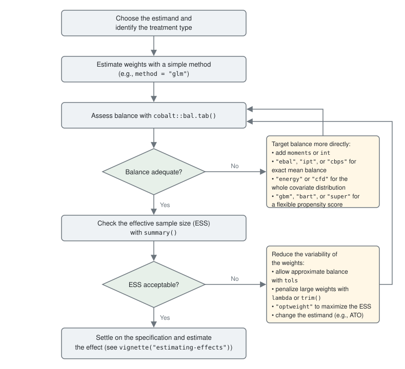

Weighting Methods
Noah Greifer
2026-10-09
Source:vignettes/weighting-methods.Rmd
weighting-methods.RmdIntroduction
WeightIt implements several methods for estimating balancing weights, each with its own options. Though the help pages for the individual methods describe each method and how it can be used, this vignette provides a broad overview of the available weighting methods, the ideas behind them, and the circumstances in which each might be preferred. The choice of weighting method depends on the goals of the analysis (e.g., the estimand, whether low bias or high precision is more important, whether standard errors that account for the estimation of the weights are needed) and the unique qualities of each dataset to be analyzed, so there is no single optimal choice for any given analysis. A benefit of weighting as a preprocessing step is that a number of weighting methods can be tried and their quality assessed without consulting the outcome, reducing the possibility of capitalizing on chance while allowing for the benefits of an exploratory analysis in the design phase (Ho et al. 2007; Rubin 2008).
This vignette begins with a general explanation of weighting, the
estimands that weights can target, and the ways weighting differs for
binary, multi-category, and continuous treatments. It then describes
each weighting method available in WeightIt, organized into
three families: parametric methods, which estimate a propensity score
with a parametric model; machine learning methods, which estimate a
propensity score with a flexible model; and optimization-based methods,
which estimate the weights directly by solving an optimization problem.
It ends with guidance on choosing among them, a table summarizing when
each method might be used, and a flowchart for moving through the
selection process. No data are analyzed here; for an introduction to
using the functions in WeightIt, see
vignette("WeightIt"). For instructions on installing the
packages some methods depend on, see
vignette("installing-packages"). For details on how to
estimate treatment effects and standard errors after weighting, see
vignette("estimating-effects"). Weighting for longitudinal
treatments and censoring weights are covered in
vignette("longitudinal-treatments"); sampling weights and
clustered data are not discussed here, and the s.weights
and formula arguments of weightit() describe
them.
Weighting
Weighting is a method of adjusting for measured confounders in which each unit in the sample receives a weight, and the weighted sample is analyzed in place of the original sample. The weights are chosen so that in the weighted sample, the distribution of the covariates is the same across treatment groups and resembles the distribution of the covariates in a target population. Because the treatment is then unassociated with the covariates in the weighted sample, a comparison of the weighted outcomes between treatment groups is not confounded by the measured covariates, and when the measured covariates include all the confounders, the comparison estimates the causal effect of the treatment in the target population (Robins et al. 2000; Hernán and Robins 2020). For introductions to weighting, see Austin (2011), Austin and Stuart (2015), Thoemmes and Ong (2016), and Desai and Franklin (2019).
The most familiar form of weighting is inverse probability weighting, in which each unit’s weight is the inverse of the probability of receiving the treatment it actually received, given its covariates. For a binary treatment, this probability is the propensity score, \(e(X) = P(A = 1 | X)\), where \(A\) is the treatment and \(X\) the covariates (Rosenbaum and Rubin 1983). Weighting treated units by \(1/e(X)\) and control units by \(1/(1 - e(X))\) creates a pseudo-population in which the treatment is independent of the covariates and each group resembles the full sample (Robins et al. 2000; Lunceford and Davidian 2004). In practice the propensity score is unknown and must be estimated, and the quality of the weights depends on how well it is estimated: a misspecified propensity score model yields weights that fail to balance the covariates, and the resulting effect estimate can be badly biased (Kang and Schafer 2007). Much of the development of weighting methods over the past two decades has been in response to this sensitivity.
Weights can be estimated by modeling the treatment or by directly balancing the covariates (Chattopadhyay et al. 2020; Ben-Michael et al. 2021). The modeling approach fits a model for the treatment given the covariates and transforms the predicted probabilities (or densities) into weights using a formula that depends on the estimand. The parametric and machine learning methods in WeightIt follow this approach; they differ in the model used to estimate the propensity score. The balancing approach chooses the weights directly as the solution to an optimization problem in which covariate balance enters as a constraint or as the objective, without an explicit model for the treatment. The optimization-based methods in WeightIt follow this approach. The two are more closely related than they first appear: weights that exactly balance the covariate means correspond to the inverse of a propensity score estimated by a model whose loss function is tailored to balance rather than to fit (Zhao and Percival 2017; Zhao 2019; Wang and Zubizarreta 2020), and the covariate balancing propensity score and inverse probability tilting sit between the two approaches, modifying the estimation of a parametric model so that balance is guaranteed.
Weighting as implemented in WeightIt is a form of
nonparametric preprocessing in the sense of Ho et
al. (2007):
the weights are estimated without reference to the outcome and are then
supplied to an outcome model of the analyst’s choosing, which may itself
include the covariates. This differs from matching, as implemented in
MatchIt, in that in general no units are discarded, and the
weights can take on any nonnegative value rather than being restricted
to counts of matches; see
vignette("matching-methods", package = "MatchIt") for the
matching analogue of this vignette. Weighting can target a wider range
of estimands than most matching methods, extends naturally to
multi-category and continuous treatments, and, with the
optimization-based methods, can achieve exact balance on chosen features
of the covariates. The cost is that nonuniform weights reduce precision,
which is the trade-off discussed next.
Balance and Effective Sample Size
A set of weights is judged by the balance it achieves and by the precision it retains, and the search for a weighting specification is a search for weights that do well on both.
Balance. The purpose of the weights is to remove the
association between the treatment and the covariates, so the first
criterion is the degree to which they do so, which is known as covariate
balance. For binary and multi-category treatments, balance is assessed
by comparing the weighted distribution of each covariate across
treatment groups and against the target population, using statistics
such as standardized mean differences, variance ratios, and
Kolmogorov-Smirnov statistics (Austin 2009; Harder et al. 2010;
Austin and Stuart
2015). For continuous treatments, balance is assessed by the
weighted correlation between the treatment and each covariate and by
multivariate measures such as the distance covariance (Vegetabile
et al. 2021; Huling et al.
2024). Balance should be assessed on more than the covariate
means: a weighted sample in which the means are balanced but the
variances or the joint distribution of the covariates are not can still
yield a biased estimate if the outcome depends on those features.
Balance statistics are computed by the cobalt package, which
WeightIt interfaces with directly; see
vignette("cobalt", package = "cobalt") for how to assess
and report balance. Because balance is a property of the weighted sample
rather than of the model that produced the weights, it is the only
direct evidence that a weighting specification has done its job; the fit
of the propensity score model is only weakly related to the bias of the
resulting estimate (Wyss et al.
2014).
Effective sample size. Weights that vary across
units reduce the precision of the weighted estimate relative to an
unweighted estimate from the same number of units. The effective sample
size (ESS) summarizes this loss as the size of an unweighted sample with
approximately the same precision as the weighted sample, computed within
each treatment group as \[\text{ESS} =
\frac{\left(\sum_i w_i\right)^2}{\sum_i w_i^2}\] (McCaffrey et al.
2004; Shook-Sa and
Hudgens 2022). The ESS equals the sample size when all the
weights are equal and falls toward 1 as a few units come to dominate the
weighted sample; it is reported by summary() on a
weightit object. Extreme weights, which arise when some
units have propensity scores near 0 or 1, are the usual cause of a low
ESS, and they also make the estimate sensitive to the outcomes of the
few heavily weighted units.
Balance and ESS tend to pull in opposite directions. Weights that
achieve closer balance generally need to vary more, lowering the ESS,
and weights that are constrained to be less variable generally leave
some imbalance behind. Within a given method, this trade-off is
controlled by options that relax the balance requirement or penalize the
dispersion of the weights, and across methods it is reflected in which
quantity the method prioritizes. Weight trimming (trim()),
changing the estimand to one that targets a population with better
overlap, and allowing approximate rather than exact balance are the
usual ways of trading a little bias for a gain in precision (Cole and Hernán
2008; Lee et al.
2011; Wang and
Zubizarreta 2020). The method and its options should be
chosen so that balance is adequate first and the ESS is as large as
possible given that balance.
Estimands and Target Populations
Weights target an estimand, which is defined by the population to
which the effect is meant to generalize and the contrast that is
estimated. For a binary treatment, let \(Y(1)\) and \(Y(0)\) be the potential outcomes under
treatment and control. The average treatment effect in the population
(ATE), \(E[Y(1) - Y(0)]\), is the
average effect for the population from which the sample was drawn; the
average treatment effect in the treated (ATT), \(E[Y(1) - Y(0) | A = 1]\), is the average
effect for units like those who received the treatment; and the average
treatment effect in the control (ATC), \(E[Y(1) - Y(0) | A = 0]\), is the average
effect for units like those who did not. Greifer
and Stuart (2021) discuss how
to choose among them; the choice should be made based on the substantive
question before any weights are estimated, since it determines which
methods are available and how the result is interpreted. The estimand is
set by the estimand argument of weightit();
the default is "ATE".
The weights for each estimand share a common form. Writing \(h(X)\) for a function of the covariates known as the tilting function, the weights for a binary treatment are \[w_i = \frac{h(X_i)}{A_i e(X_i) + (1 - A_i)(1 - e(X_i))}\] with the denominator being the probability of receiving the treatment actually received (Li, Morgan, et al. 2018). The tilting function determines the target population: the weighted sample resembles the population whose covariate density is proportional to \(h(X)\) times the density of the covariates in the full sample. The estimands available in WeightIt and their tilting functions are the following:
| Estimand | estimand |
Target population | \(h(X)\) | Treated weight | Control weight |
|---|---|---|---|---|---|
| ATE | "ATE" |
full sample | \(1\) | \(1/e(X)\) | \(1/(1 - e(X))\) |
| ATT | "ATT" |
treated units | \(e(X)\) | \(1\) | \(e(X)/(1 - e(X))\) |
| ATC | "ATC" |
control units | \(1 - e(X)\) | \((1 - e(X))/e(X)\) | \(1\) |
| ATO | "ATO" |
overlap population | \(e(X)(1 - e(X))\) | \(1 - e(X)\) | \(e(X)\) |
| ATM | "ATM" |
matched population | \(\min\{e(X), 1 - e(X)\}\) | \(\min\{e(X), 1 - e(X)\}/e(X)\) | \(\min\{e(X), 1 - e(X)\}/(1 - e(X))\) |
| ATOS | "ATOS" |
optimal subset | \(\mathbb{1}(\alpha < e(X) < 1 - \alpha)\) | \(\mathbb{1}(\cdot)/e(X)\) | \(\mathbb{1}(\cdot)/(1 - e(X))\) |
The ATE, ATT, and ATC weights are the classical inverse probability weights, and almost all methods in WeightIt can target these estimands. For the ATT, the treated units receive weights of 1 and only the control units are weighted, so the treated group is left intact and the control group is weighted to resemble it; the ATC is the reverse. ATE weights can be very large when some units have propensity scores near 0 or 1, since every unit must be reweighted to resemble the full sample, including units unlike any in the other group; the ATT and ATC are less affected but still require that every unit in the focal group have some chance of being in the other group (Austin and Stuart 2015).
The remaining three estimands change the target population to one in
which the treatment groups overlap, trading a sample-defined population
for bounded weights and a more precise estimate. The average treatment
effect in the overlap (ATO) uses the overlap weights of Li, Morgan, et al. (2018), which
give the most weight to units about equally likely to be in either group
and, with a logistic regression propensity score, yield exact balance on
the covariate means; they perform well when overlap is limited (Li,
Thomas, et al. 2018; Zhou et al.
2020). The average treatment effect in the matched sample
(ATM) uses the matching weights of Li and Greene
(2013), which
mimic 1:1 pair matching without replacement (see
Yoshida et al.
2017 for multi-category treatments), and the average
treatment effect in the optimal subset (ATOS) uses the trimming rule of
Crump et al. (2009), which
discards units with propensity scores outside \([\alpha, 1 - \alpha]\), with \(\alpha\) chosen to minimize the variance of
the estimate. All three require a propensity score, so they are
available only with the methods that estimate one, and because their
target populations are defined by the propensity score rather than by
the sample, the effect should be interpreted as applying to units in
equipoise (Mao et al. 2018; Greifer and Stuart
2021). The weights must also be used when averaging potential
outcomes in effect estimation, as described in
vignette("estimating-effects").
The weights for the ATE can be stabilized by multiplying each unit’s
weight by the marginal probability of its observed treatment value,
which is requested with stabilize = TRUE. Stabilization
does not change the balance of the weighted sample or the target
population, but it reduces the variability of the weights and improves
the performance of estimators that use an unsaturated outcome model
(Robins et al. 2000;
Cole and Hernán
2008). It matters most for longitudinal treatments, and for a
continuous treatment it is built into the weights by default, as
described below.
Treatment Types
WeightIt supports binary, multi-category, and continuous
treatments. The treatment type is determined automatically from the
treatment variable supplied in formula, and it determines
how the propensity score is defined, how the weights are formed from it,
and how balance is assessed.
Binary treatments. For a binary treatment, the
propensity score is the probability of being treated given the
covariates, and the weights are those in the table above. For methods
that estimate a propensity score, it is returned in the ps
component of the weightit object. Which value of the
treatment is considered the treated group is determined by
weightit() using a set of heuristics described at
?weightit, and it can be set directly with the
focal argument when the ATT or ATC is requested; it is
safest to code the treatment as 0 for control and 1 for treated.
Multi-category treatments. For a treatment with more
than two levels, the propensity score generalizes to the vector of
probabilities of receiving each level, \(p_a(X) = P(A = a | X)\) for each level
\(a\), which Imbens (2000) calls the
generalized propensity score. The weights take the same form as for a
binary treatment, \(w_i =
h(X_i)/p_{A_i}(X_i)\), with the denominator being the probability
of receiving the level actually received. For the ATE, \(h(X) = 1\), so each group is weighted to
resemble the full sample. For the ATT, one level is designated the focal
group using focal, \(h(X) =
p_f(X)\) for that level \(f\),
and each of the other groups is weighted to resemble the focal group,
which is left unweighted; the estimand is then the effect of each
non-focal treatment relative to the focal treatment among units who
received the focal treatment. The generalized overlap weights of Li and Li (2019) extend the
ATO with \(h(X) = 1/\sum_a 1/p_a(X)\),
the harmonic mean of the generalized propensity scores, and the matching
weights of Yoshida et al. (2017)
extend the ATM with \(h(X) = \min_a
p_a(X)\). Balance is assessed between each pair of treatment
groups or between each group and the target population (McCaffrey et al.
2013). For the parametric and machine learning methods, the
generalized propensity score is estimated by a multinomial model or by a
series of binary models, one per level; for the optimization-based
methods, the balance constraints or objective are applied to each group
against the target population (de los Angeles Resa and Zubizarreta
2020). For ordered treatments (i.e., ordered
factors), method = "glm" fits an ordinal regression model.
Effect estimation after weighting for a multi-category treatment is
described in vignette("estimating-effects").
Continuous treatments. For a continuous treatment,
there is no probability of treatment to invert. The generalized
propensity score is instead the conditional density of the treatment
given the covariates, \(f_{A|X}(a |
X)\), evaluated at each unit’s observed treatment value (Hirano and Imbens
2005; Imai and Van Dyk
2004), and the weights are \[w_i =
\frac{f_A(A_i)}{f_{A|X}(A_i | X_i)}\] where \(f_A(a)\) is the marginal density of the
treatment (Robins et al.
2000). In the weighted sample, the treatment is independent
of the covariates, and the estimand is the average dose-response
function, \(E[Y(a)]\) as a function of
the dose \(a\), in the full sample;
there is no analogue of the ATT, so the estimand argument
is ignored. Balance is assessed by the weighted correlations between the
treatment and the covariates, which should be close to 0, and by the
distance covariance (Vegetabile
et al. 2021; Huling et al.
2024); see vignette("estimating-effects") for
estimating the dose-response function after weighting.
The modeling methods require the analyst to specify the shape of the
conditional density. By default, a normal density is used, with the
conditional mean estimated by regressing the treatment on the covariates
and the residual variance estimated from the fit, as recommended by
Robins et al. (2000). The
density argument can be used to request other densities,
such as a \(t\)-distribution, which
Naimi et al. (2014)
found to perform better when the treatment has heavy tails, or a kernel
density estimate of the residuals. The weights are highly sensitive to
this choice and to the specification of the conditional mean, and even
small departures can produce extreme weights (Naimi et al.
2014; Zhu et al.
2015; Huling et
al. 2024). The optimization-based methods avoid specifying a
density altogether: entropy balancing and stable balancing weights
constrain the weighted treatment-covariate correlations (Tübbicke 2022; Vegetabile
et al. 2021; Greifer
2020), and energy balancing minimizes the weighted distance
covariance between the treatment and the covariates (Huling et al.
2024). For continuous treatments especially, these methods
tend to be more reliable than the modeling methods.
Weighting Methods
Below, we describe each of the weighting methods implemented in
WeightIt, organized into the three families introduced above.
Each method is requested by supplying its name to the
method argument of weightit(), and each has a
help page, named method_ followed by the method name (e.g.,
?method_glm), that lists the treatment types and estimands
it supports, the additional arguments it accepts, how it handles missing
covariate values and sampling weights, and whether it supports
M-estimation. M-estimation refers to the ability of
glm_weightit() and related functions to compute standard
errors that account for the estimation of the weights; for methods that
do not support it, the bootstrap should be used instead. See
vignette("estimating-effects") for details. The
.weightit_methods object contains these properties for each
method in a form that can be queried programmatically.
Parametric Methods
Parametric methods estimate the propensity score with a parametric model for the treatment given the covariates and then convert the estimated propensity scores into weights using the formulas above. They are the oldest and most widely used weighting methods, they run quickly even on large datasets, and because the propensity score model has a finite set of parameters estimated by solving estimating equations, they support M-estimation. Their weakness is that the weights are only as good as the model: when the true propensity score is not of the assumed form, as when a nonlinear term or interaction is omitted, the estimated scores fail to balance the covariates, the weights can be extreme, and the effect estimate can be badly biased (Kang and Schafer 2007). Covariate balancing propensity scores and inverse probability tilting respond to this by changing how the model’s parameters are estimated so that balance on chosen moments of the covariates is guaranteed whether or not the model is correctly specified, which makes them considerably less sensitive to misspecification than maximum likelihood (Wyss et al. 2014).
Propensity Score Weighting Using Generalized Linear Models
(method = "glm")
Propensity score weighting using generalized linear models is the
default method in WeightIt and the classical form of inverse
probability weighting. For a binary treatment, the propensity score is
estimated by logistic regression of the treatment on the covariates
(Rosenbaum and Rubin
1983; Austin
2011), and the weights are computed from the predicted
probabilities for the requested estimand; all six estimands listed above
are available. Other link functions, such as the probit or complementary
log-log, can be requested with the link argument. See
?method_glm for the documentation for
weightit() with method = "glm".
For multi-category treatments, the generalized propensity scores are
estimated by multinomial logistic regression, implemented within
WeightIt by default; the multi.method argument can
be used to request a series of binomial models instead, or the
implementations in the mclogit or MNP packages, and
for ordered treatments an ordinal regression model is used. For
continuous treatments, the conditional mean of the treatment is
estimated by linear regression, and the conditional density is formed
from the residuals using the distribution specified by
density. The marginal density in the numerator is estimated
by marginalizing over the conditional density.
Several refinements to the standard model are available. When the
treatment groups are nearly separated by the covariates or one group is
small, maximum likelihood estimates can be infinite or badly biased and
the resulting propensity scores extreme; adding a br.
prefix to link (e.g., link = "br.logit")
requests the bias-reduced estimates of Firth (1993), which are
always finite, and link = "flic" or "flac"
requests the Firth-corrected logistic regression models of Puhr et al. (2017), which
additionally correct the predicted probabilities. When units are
clustered, random effects terms in the lme4 style can be
included in formula to fit a multilevel propensity score
model (Li et al. 2013).
Setting missing = "saem" fits the model directly to
covariates with missing values using the stochastic approximation EM
algorithm of Jiang et al. (2019) rather
than adding missingness indicators. Supplying a number to
subclass requests marginal mean weighting through
stratification, described under Additional Options below. M-estimation
is supported except with the Firth-corrected links, multilevel models,
missing = "saem", subclass, or a kernel
density estimate.
Because the model is specified by the analyst, its specification should be chosen with balance in mind rather than with prediction of the treatment in mind: squared terms, interactions, and transformations of the covariates should be added to the formula until the covariates are balanced in the weighted sample (Austin and Stuart 2015; Wyss et al. 2014). Logistic regression propensity scores can produce extreme weights when there is limited overlap, so the ESS should be examined alongside balance, and trimming or an overlap-based estimand considered when it is low. Even when another method is ultimately chosen, this method is a natural starting point and a useful benchmark, since it is fast, well understood, and the standard against which other methods are compared.
Covariate Balancing Propensity Score Weighting
(method = "cbps")
The covariate balancing propensity score (CBPS) of Imai and Ratkovic (2014)
estimates the parameters of a logistic regression propensity score model
not by maximum likelihood but by the generalized method of moments,
using conditions that require the weighted covariate means to be
balanced. In the just-identified version, which is the default
(over = FALSE), the balance conditions replace the usual
score equations entirely, so there are exactly as many conditions as
parameters and the solution yields exact balance on the means of the
covariates in the model (and on any additional terms requested with
moments, int, or quantile). In
the over-identified version (over = TRUE), the balance
conditions are combined with the score equations, so the estimated
parameters compromise between fitting the treatment and balancing the
covariates, and balance is improved relative to maximum likelihood but
not exact. See ?method_cbps for the documentation for
weightit() with method = "cbps". CBPS is
implemented within WeightIt and does not require the
CBPS package, though the two implementations differ in some
defaults and in the versions available; see the help page for
details.
CBPS can be used with binary, multi-category, and continuous treatments. For binary treatments, the ATE, ATT, ATC, and ATO are available; the ATO weights of Li, Morgan, et al. (2018) already balance the covariate means exactly when the propensity score is estimated by logistic regression, so for the ATO the just-identified CBPS and maximum likelihood coincide. For multi-category treatments, the parameters of a multinomial logistic regression model are estimated so that each group is balanced to the target. For continuous treatments, the method of Fong et al. (2018) estimates the parameters of a linear regression model for the treatment so that the weighted correlations between the treatment and the covariates are 0, with the normal density used to form the weights; the WeightIt implementation departs slightly from theirs in treating the treatment mean and variance as parameters to be estimated. M-estimation is supported for the just-identified CBPS with binary and multi-category treatments. In simulations, CBPS has been found to balance the covariates better and yield less biased estimates than maximum likelihood when the propensity score model is misspecified (Wyss et al. 2014).
The just-identified CBPS is closely related to entropy balancing and
inverse probability tilting, described below; all three solve for
weights that exactly balance the covariate means, and for the ATT with
the logit link they yield identical weights. For other estimands they
differ in the function of the weights that is implicitly minimized, and
in practice the differences in the resulting weights are usually small.
Note that the balance conditions do not always have a solution, most
often with a continuous treatment and many covariates;
weightit() warns when the optimizer settles at a point
where the conditions are unmet, and balance should then be checked
rather than assumed to be exact.
Inverse Probability Tilting (method = "ipt")
Inverse probability tilting (IPT), proposed by Graham et al. (2012),
estimates the parameters of a logistic regression (or other generalized
linear model) propensity score model by solving a modified set of score
equations, chosen so that the resulting weights exactly balance the
covariate means between each weighted group and the target population.
For the ATE, two sets of parameters are estimated, one tilting the
treated group toward the full sample and one tilting the control group;
for the ATT, the version described by Sant’Anna
and Zhao (2020)
is used, in which only the control group is tilted toward the treated
group. See ?method_ipt for the documentation for
weightit() with method = "ipt". IPT is
implemented within WeightIt using the rootSolve
package to solve the estimating equations.
IPT can be used with binary and multi-category treatments, for which
the ATE, ATT, and ATC are available; it is not available for continuous
treatments. Additional balance constraints can be requested with
moments, int, and quantile, and
the link function can be changed with link, though some
links allow negative weights and should be used with caution.
M-estimation is supported in all cases. For the ATT with the logit link,
IPT, entropy balancing, and the just-identified CBPS yield identical
weights; for the ATE they differ, because IPT fits a separate model for
each group. Graham et al. (2012) show
that the IPT estimator of the ATE is consistent if either the propensity
score follows the assumed logistic model or the outcome is linear in the
covariates within each treatment group, a form of double robustness that
the other two methods have only under narrower conditions (for the ATT
in the case of entropy balancing, and when there is no effect
modification by the covariates in the case of the just-identified CBPS).
This additional guarantee comes at some potential cost in precision.
Machine Learning Methods
Machine learning methods estimate the propensity score with a
flexible model that does not require the analyst to specify the
functional form of the relationship between the covariates and the
treatment. Their motivation is the misspecification problem of
parametric models: a model that can represent nonlinearities and
interactions on its own has a better chance of recovering the true
propensity score when its form is unknown, and simulation studies have
found that boosted trees and other flexible learners can outperform a
misspecified logistic regression in balancing the covariates and
reducing bias (Setoguchi et al. 2008;
Lee et al. 2010; Westreich et al.
2010; Cannas and
Arpino 2019). These methods can be used with binary,
multi-category, and continuous treatments and can target all the
estimands available to method = "glm".
The flexibility has costs. A model that fits the treatment too well
produces propensity scores near 0 and 1, and therefore extreme weights,
even when the true propensity scores are moderate; the tuning parameters
that govern this trade-off must be chosen, and because prediction
accuracy is only weakly related to the bias of the weighted estimate
(Wyss et al. 2014),
it is better to choose them by the balance they produce than by
cross-validated prediction error, as McCaffrey et
al. (2004) proposed for boosted
models. Even with balance-based tuning, there is no guarantee that any
specification balances the covariates adequately, so balance must be
checked as with any method. The models take longer to fit than
parametric models, sometimes much longer, and M-estimation is not
available, so standard errors must be computed by bootstrapping.
Propensity scores from machine learning models are often poorly
calibrated, and calibrating them before forming the weights, as
calibrate() does, can improve the resulting estimates (Gutman et al.
2024; van der Laan et al. 2025); see
Additional Options below. Machine learning methods are most useful with
many covariates or when their relationship to the treatment is likely to
be complex, and least useful when a parametric model is approximately
correct, in which case they tend to perform worse than the parametric
model (McCaffrey et
al. 2004).
Propensity Score Weighting Using Generalized Boosted Models
(method = "gbm")
Generalized boosted modeling (GBM, also known as gradient boosting)
builds a prediction for the treatment as a sum of many small regression
trees, each fit to the residuals of the trees before it. McCaffrey et al. (2004) introduced it for propensity
score estimation and made the key suggestion that the number of trees,
which controls how flexible the model is, be chosen to optimize
covariate balance in the weighted sample rather than prediction of the
treatment; McCaffrey et al. (2013)
extended the method to multi-category treatments and Zhu et al. (2015) to
continuous treatments. The implementation in WeightIt uses the
gbm package to fit the model and mirrors the functionality of
the twang package, the first to implement this method, with
additional options and estimands. See ?method_gbm for the
documentation for weightit() with
method = "gbm".
The balance criterion used to select the number of trees is set with
criterion; the default is the mean absolute standardized
mean difference across the covariates for binary and multi-category
treatments and the mean absolute treatment-covariate correlation for
continuous treatments, and any of the statistics available in
cobalt::bal.compute() can be used instead, as can
cross-validated prediction error. The maximum number of trees is set
with n.trees, and if the best balance is found at or near
the maximum, the model should be refit with a larger value;
plot() on the output displays the criterion against the
number of trees. Other tuning parameters, including the depth of the
trees (interaction.depth), the shrinkage applied to each
tree (shrinkage), and the fraction of units used to fit
each tree (bag.fraction), can be supplied with several
values each, in which case weightit() fits a model for each
combination and selects the one with the best balance. Griffin et al. (2017) examine the
choice of balance criterion and of the number of trees and offer
recommendations for both. Setting use.offset = TRUE
includes the linear predictor of a generalized linear model as an
offset, so the trees model only the departures from that model, which
can improve performance when the true propensity score is close to a
generalized linear model. The weights can be trimmed before the best
number of trees is selected using trim.at, which is helpful
when a few extreme weights would otherwise dominate the balance
criterion, as is common with continuous treatments. GBM is well suited
to capturing nonlinear and nonadditive treatment models but tends to
perform worse than logistic regression when the treatment model is
simple (McCaffrey et
al. 2004).
Propensity Score Weighting Using SuperLearner
(method = "super")
SuperLearner is a stacking method that fits several candidate models
(the “library”) to the treatment and covariates and combines their
predictions in a weighted average, with the combination weights chosen
by cross-validation (Pirracchio et al. 2015). Its appeal is
the oracle property: asymptotically, the combined prediction performs as
well as the best model in the library, so including a variety of
candidates, such as a logistic regression, a boosted model, and a
regularized regression, protects against choosing a single poor model.
Kreif et al. (2015)
describe its use for continuous treatments. The implementation in
WeightIt uses the SuperLearner package, and the
library must be supplied through SL.library;
SuperLearner::listWrappers() lists the available
candidates. See ?method_super for the documentation for
weightit() with method = "super".
By default, the combination weights are chosen by nonnegative least
squares on the cross-validated predictions. Setting
discrete = TRUE instead selects the single best-performing
candidate. Setting SL.method = "method.balance" requests
the balance SuperLearner of Pirracchio and Carone
(2018), in
which the combination weights are chosen to optimize a balance
criterion, specified with criterion, rather than
cross-validated prediction error, in the same spirit as balance-based
tuning for GBM; this is available for binary and continuous treatments.
For multi-category treatments, one SuperLearner is fit for each
treatment level. Because several models are fit and cross-validated,
this method can be slow, and the results depend on which candidates are
included. It is a reasonable choice when there is genuine uncertainty
about which model is appropriate for the propensity score and the sample
is large enough to support cross-validation.
Propensity Score Weighting Using BART
(method = "bart")
Bayesian additive regression trees (BART) is a Bayesian sum-of-trees
model in which each tree is constrained by a regularization prior to be
a weak learner, so that the sum captures complex functions without
overfitting (Chipman et al.
2010). For propensity score estimation, the posterior mean of
the predicted probability of treatment (or of the conditional mean of a
continuous treatment) is used as the propensity score (Hill
et al. 2011). Unlike GBM and SuperLearner, BART does not
optimize a loss function or require tuning by cross-validation or
balance; the default priors tend to work well with little modification,
which makes it the simplest of the machine learning methods to use. The
implementation in WeightIt uses the dbarts package,
and all of its arguments can be passed through weightit().
See ?method_bart for the documentation for
weightit() with method = "bart".
As with GBM, use.offset = TRUE adds the linear predictor
of a generalized linear model as an offset. Random effects terms can be
included in formula to fit a multilevel BART model using
the stan4bart package. BART has a random component, so the
seed argument should be supplied (or
set.seed() called with n.threads = 1) to make
the results reproducible. Sampling weights are not supported, and, as
with the other machine learning methods, M-estimation is not available.
Note that much of the literature on BART for causal inference concerns
modeling the outcome rather than the treatment, so the evidence specific
to BART-estimated propensity scores is thinner than for GBM.
Optimization-Based Methods
Optimization-based methods estimate the weights directly, as the solution to an optimization problem in which covariate balance appears either as a set of constraints or as the objective, and the remaining freedom in the weights is used to keep them as uniform as possible (Zubizarreta 2015; Chattopadhyay et al. 2020; Ben-Michael et al. 2021). No propensity score model is specified, so there is no model to misspecify in the usual sense; instead, the analyst specifies what is to be balanced (the covariates in the formula and, optionally, higher-order terms, interactions, and quantiles), and the method guarantees balance on those features, exactly or to within a tolerance. These methods originate in survey calibration, and Chan et al. (2016) show that a broad class of them can attain the semiparametric efficiency bound for the ATE when the set of balanced functions grows with the sample size. Relatedly, weights that exactly balance the covariate means are the inverse propensity scores from a model fit with a loss function tailored to balance, so the choice of what to balance plays the role that model specification plays for parametric methods (Zhao and Percival 2017; Zhao 2019; Wang and Zubizarreta 2020).
Within this family, the methods differ in what they balance and in how they measure the dispersion of the weights. Entropy balancing, stable balancing weights, and nonparametric CBPS balance moments of the covariates, so balance on the specified features is exact (or within tolerance) and nothing is guaranteed about features not specified. Energy balancing and characteristic function distance balancing instead minimize a measure of the distance between the entire weighted covariate distribution and the target, so all features of the joint distribution are balanced, though none exactly. Exact balance on many features can require extreme weights, so the ESS can be low; allowing approximate balance or penalizing the dispersion of the weights recovers precision at the cost of a little imbalance (Wang and Zubizarreta 2020). Because no propensity score is estimated, only the ATE, ATT, and ATC are available, and no propensity score is returned. Among these methods, only entropy balancing supports M-estimation.
Entropy Balancing (method = "ebal")
Entropy balancing, proposed by Hainmueller (2012),
finds the weights that minimize the Kullback-Leibler divergence from a
set of base weights (uniform by default) subject to the constraints that
the weighted means of the covariates in each weighted group equal those
in the target population and that the weights sum to a fixed value. The
problem is solved through its dual, which has one parameter per balance
constraint and is unconstrained, so it is fast and reliable even with
many units. The result is exact mean balance on every term in the model,
which can be extended to higher moments, interactions, and quantiles
with moments, int, and quantile.
See ?method_ebal for the documentation for
weightit() with method = "ebal". Entropy
balancing is implemented within WeightIt and requires no
additional packages.
Zhao and Percival (2017) showed that
entropy balancing for the ATT is equivalent to fitting a logistic
regression propensity score model with a loss function that enforces
balance, and that it is doubly robust: the estimate is consistent if
either the propensity score is a logistic regression in the balanced
terms or the outcome in the control group is linear in them. Källberg and Waernbaum (2023) study its
properties for the ATE. For continuous treatments, the method of Tübbicke (2022) and
Vegetabile et al. (2021)
constrains the weighted treatment-covariate correlations to be 0 and the
weighted moments of the treatment and covariates to equal their
unweighted values; Vegetabile et al. (2021)
recommend holding the first three moments fixed, which is requested with
d.moments = 3. Approximate balance can be requested with
tols, in which case a regularized version of the problem is
solved and the weights are less variable, and previously estimated
weights can be supplied as base.weights so the new weights
depart from them as little as possible. M-estimation is supported
whenever tols is 0. For the ATT, entropy balancing yields
the same weights as the just-identified CBPS and IPT. It is often a good
first choice among the optimization-based methods: it is fast, requires
no additional packages, guarantees mean balance, and supports
M-estimation.
Stable Balancing Weights (method = "optweight")
Stable balancing weights, proposed by Zubizarreta (2015), are the
weights of minimum variance that satisfy balance constraints, which may
be approximate: each weighted covariate mean is required to be within a
tolerance of its target rather than equal to it. The problem is a
quadratic program, solved with the osqp package through the
optweight package, and the result directly maximizes the ESS
subject to the chosen degree of balance. The tolerance is set with
tols as a maximum allowed standardized mean difference.
Wang and Zubizarreta (2020)
study the asymptotic properties of these weights and show that allowing
approximate balance can improve precision while retaining consistency
when the tolerances shrink with the sample size. See
?method_optweight for the documentation for
weightit() with method = "optweight".
Stable balancing weights can be used with binary and multi-category
treatments (de los Angeles Resa and Zubizarreta
2020) and with continuous treatments, for which the
constraints are on the weighted treatment-covariate correlations (Greifer
2020). The function of the weights that is minimized can be
changed with norm: the default "l2" minimizes
their variance; "entropy" minimizes their negative entropy,
which makes the method a version of entropy balancing that allows
approximate balance; and "log" minimizes the sum of the
negative logs of the weights, which corresponds to the nonparametric
CBPS described next. The dual variables for the balance constraints,
available through plot(), indicate how much each constraint
costs in terms of the dispersion of the weights, which can guide the
choice of which constraints to relax. M-estimation is not supported.
Because optweight::optweight() offers finer control over
the tolerances and uses the same syntax as weightit(), it
is recommended for stable balancing weights in place of
weightit() with method = "optweight".
Nonparametric Covariate Balancing Propensity Score Weighting
(method = "npcbps")
The nonparametric CBPS of Fong et al. (2018) finds
the weights that maximize the empirical likelihood of the data subject
to the constraints that the weighted covariate means (for binary and
multi-category treatments) or the weighted treatment-covariate
correlations (for continuous treatments) are balanced. It is similar to
entropy balancing with a different measure of dispersion and generally
produces similar weights. The implementation in WeightIt uses
the CBPS package, and only the ATE is available; sampling
weights and M-estimation are not supported. See
?method_npcbps for the documentation for
weightit() with method = "npcbps".
Because the optimization problem is not convex, the solver can be
slow to converge or fail to converge, and the corprior
argument allows approximate balance to make the problem easier. The same
weights can be estimated more reliably, with more estimands and with
approximate balance controlled directly, by setting
norm = "log" with method = "optweight", so the
latter is generally preferred; setting method = "npcbps"
remains useful mainly to reproduce analyses that used the CBPS
package.
Energy Balancing (method = "energy")
Energy balancing, proposed by Huling and Mak
(2024),
chooses the weights that minimize the energy distance between the
weighted covariate distribution of each treatment group and that of the
target population. The energy distance between two multivariate
distributions \(F\) and \(G\) is \[\mathcal{E}(F, G) = 2\,E\|X - Y\| - E\|X -
X'\| - E\|Y - Y'\|\] where \(X,
X' \sim F\) and \(Y, Y' \sim
G\) are independent; it is 0 only when the two distributions are
identical, so minimizing it balances all features of the joint covariate
distribution rather than a chosen set of moments. The weighted energy
distance is a quadratic function of the weights, so the problem is a
quadratic program, solved with the osqp package. See
?method_energy for the documentation for
weightit() with method = "energy".
For binary and multi-category treatments, the ATE, ATT, and ATC are
available, and by default the improved version of Huling and Mak (2024) is used
for the ATE, which also minimizes the energy distance between each pair
of treatment groups. For continuous treatments, the independence weights
of Huling et al. (2024)
minimize the weighted distance covariance between the treatment and the
covariates, a measure of dependence that is 0 only under independence,
along with the energy distances between the weighted and unweighted
distributions of the treatment and of the covariates. Exact balance on
the means (or correlations) can be added as constraints with
moments and int, which guarantees mean balance
while the energy distance is minimized among weights that satisfy it;
the constraints can be relaxed with tols. The
lambda argument penalizes the variance of the weights and
can be increased when the ESS is low. The distance between units is the
Euclidean distance on the scaled covariates by default and can be
changed with dist.mat. Because the energy distance involves
all pairs of units, the method requires memory proportional to the
square of the sample size and can be slow or infeasible for samples
beyond several thousand units. M-estimation is not supported. Energy
balancing is a good choice when balance on the full joint distribution
of the covariates is desired, for example when the outcome model is
expected to be nonlinear or to involve interactions and it is unclear
which terms to balance.
Characteristic Function Distance Balancing
(method = "cfd")
Characteristic function distance (CFD) balancing, proposed by Santra et al. (2026),
generalizes energy balancing by replacing the energy distance with a
weighted integrated squared difference between the characteristic
functions of the two distributions. The weighting function in that
integral corresponds to a kernel, and different kernels emphasize
different features of the distributions; the CFD is closely related to
the maximum mean discrepancy with the corresponding kernel, which
connects the method to kernel balancing (Wong and Chan
2018; Hazlett
2020). The kernel is chosen with kernel; the
default is the multivariate Gaussian kernel, and the Matern, Laplace,
and \(t\) kernels are also available.
With kernel = "energy", the CFD is the energy distance and
the method is identical to energy balancing. Santra et al. (2026)
compare the kernels and relate each to assumptions about the form of the
outcome model. See ?method_cfd for the documentation for
weightit() with method = "cfd".
CFD balancing is available for binary and multi-category treatments
only. Its options parallel those of energy balancing: exact mean balance
can be added with moments and int and relaxed
with tols, the lambda argument penalizes the
variance of the weights, and the improved version is used for the ATE by
default. The bandwidth of the kernel is set to the median pairwise
distance between units by default and can be scaled with
bw_scale. The same computational considerations as for
energy balancing apply, and M-estimation is not supported.
Additional Options
Several options are shared across methods and change what the weights target or how they are processed after estimation. The help page for each method says which of them apply.
Balancing Higher Moments, Interactions, and Quantiles
(moments, int, quantile)
For the methods that balance moments of the covariates (CBPS, IPT,
entropy balancing, stable balancing weights, nonparametric CBPS, and, as
additional constraints, energy and CFD balancing), the terms balanced
are the covariates in formula by default. Setting
moments to an integer greater than 1 adds powers of each
continuous covariate up to that order, so moments = 2
balances the means and variances; setting int = TRUE adds
all first-order interactions between covariates; and supplying
quantile adds variables that, when balanced, ensure balance
on the requested quantiles of each continuous covariate (binary and
multi-category treatments only). These options extend exact mean balance
toward balance on the full distribution at the cost of more constraints,
and therefore more variable weights, so they should be added when
balance on the corresponding features is inadequate rather than by
default. Functions of the covariates can also be included directly in
formula (e.g., I(age^2) or
age:educ), which works for every method.
Stabilizing Weights (stabilize)
Setting stabilize = TRUE multiplies each unit’s ATE
weight by the marginal probability of its observed treatment, and a
formula can be supplied instead to use the predicted probability from a
model with the given predictors in the numerator (Robins et al. 2000;
Cole and Hernán
2008). Stabilization is mainly useful for longitudinal
treatments; for continuous treatments it is built into the weights, so
stabilize = TRUE leaves them unchanged. It is available
only for the ATE and only with method = "glm",
"gbm", "super", or "bart"; the
stabilize_ok component of .weightit_methods
lists the methods that allow it.
Trimming Weights (trim())
trim() winsorizes the largest weights by setting all
weights above a chosen quantile (or the chosen number of largest
weights) to the weight at that quantile, or optionally sets them to 0 to
drop the units. Trimming reduces the variability of the weights and
increases the ESS, but it can worsen balance and, when the trimmed units
are influential, bias the estimate; it also changes the target
population when the estimand is the ATE, since the units whose weights
were trimmed no longer receive the weight needed to represent their part
of the population (Cole and Hernán
2008; Lee et al.
2011). Balance should be assessed again after trimming. An
overlap-based estimand such as the ATO achieves a similar reduction in
the variability of the weights without an arbitrary cutoff, and it is
often preferable when the target population is not important.
Calibrating Propensity Scores (calibrate())
calibrate() refits the propensity score as a function of
the previously estimated propensity score alone, using logistic
regression (Platt scaling) as described by Gutman
et al. (2024) or
isotonic regression as described by van der Laan et al. (2025),
and recomputes the weights from the calibrated score. Machine learning
methods often produce propensity scores that discriminate well between
the groups but are poorly calibrated, with predicted probabilities more
extreme than the true ones, and calibration corrects this, which can
improve both the balance and the ESS of the resulting weights. It
applies to binary treatments and to any method that returns a propensity
score.
Marginal Mean Weighting Through Stratification
(subclass)
With method = "glm", "gbm",
"super", or "bart", supplying a number to
subclass requests marginal mean weighting through
stratification [MMWS; Hong (2010); Hong (2012)], also known
as fine stratification weighting (Desai et al. 2017). The units are
divided into subclasses based on quantiles of the propensity score, and
the propensity score used to form the weights is replaced by the
proportion of units in each treatment group within each subclass, so the
weights are constant within subclasses. This coarsening makes the
weights less sensitive to the exact values of the propensity scores and
limits their variability, at the cost of residual imbalance within
subclasses; with many subclasses, the weights approach the standard
inverse probability weights. The number of subclasses should be chosen
by examining balance, and cobalt::bal.compute() can be used
to select it. M-estimation is not available when subclass
is used.
Supplying Propensity Scores (ps)
Propensity scores estimated outside WeightIt can be supplied
to the ps argument of weightit(), in which
case no model is fit and the scores are converted to weights for the
requested estimand exactly as they would be for
method = "glm"; see ?method_ps for the
accepted forms. This makes the estimand, trimming, calibration, and
balance assessment machinery of WeightIt available for weights
derived from any propensity score model, though M-estimation is not
available, since the model that produced the scores is unknown.
get_w_from_ps() performs the same conversion but returns
only the weights.
Choosing a Weighting Method
Choosing a weighting method for one’s data depends on the unique characteristics of the dataset and the goals of the analysis. Below we offer some guidance, but the choice cannot be settled by guidance alone: the only sufficient justification for a weighting specification is adequate balance and an acceptable ESS in the weighted sample, and both must be assessed for each candidate. Because the weights are estimated without reference to the outcome, many specifications can and should be tried, and the search should not stop at the first specification that crosses a balance threshold but should continue toward the best balance that can be achieved while retaining an adequate ESS (Ho et al. 2007; Rubin 2008). Balance should be assessed broadly, on the means, variances, and distributions of the covariates and on their interactions, since a specification can balance the means while leaving the rest of the distribution imbalanced (Austin 2009; Harder et al. 2010).
The estimand determines which methods are available. The ATE, ATT, and ATC can be targeted by almost every method. The ATO, ATM, and ATOS require a propensity score and so are available only with the parametric and machine learning methods; when the target population is less important than precision or than avoiding extrapolation into regions of poor overlap, the ATO is the natural choice among them (Li, Morgan, et al. 2018; Mao et al. 2018). When the ATE is the target and overlap is poor, no method will produce weights that are both balanced and stable, and the choice is between accepting a low ESS, trimming, and changing the estimand.
The treatment type also narrows the options. For continuous
treatments, the modeling methods require a correctly specified
conditional density and are sensitive to its misspecification, so the
optimization-based methods, which avoid the density altogether, are
usually preferable: entropy balancing with d.moments = 3,
stable balancing weights, or energy balancing (Vegetabile
et al. 2021; Huling et al.
2024). If a modeling method is used for a continuous
treatment, the density argument should be varied, the
weights trimmed, and balance assessed on the treatment-covariate
correlations and the distance covariance. For multi-category treatments,
all methods except IPT and CFD balancing (for the ATC) and nonparametric
CBPS (for anything but the ATE) are available, and the considerations
are the same as for binary treatments.
The need for standard errors that account for the estimation of the
weights favors the methods that support M-estimation:
"glm", "cbps" (just-identified, binary and
multi-category), "ipt", and "ebal" (with
tols = 0). For the others, the bootstrap must be used,
which is straightforward with glm_weightit() but can be
slow for methods that are themselves slow to fit, such as GBM,
SuperLearner, and energy balancing with large samples. See
vignette("estimating-effects") for details.
Within these constraints, a reasonable strategy is to begin with
method = "glm", which is fast and serves as a benchmark,
and to assess balance. If the covariate means are imbalanced, an
optimization-based method that guarantees mean balance, such as entropy
balancing, or a parametric method with the same guarantee, such as the
just-identified CBPS or IPT, will remove that imbalance directly,
usually with a smaller loss in ESS than refitting the logistic
regression model repeatedly would achieve. If the means are balanced but
the variances, distributions, or interactions are not, higher moments
and interactions can be added to the balance constraints with
moments and int, or energy or CFD balancing
can be used to balance the whole joint distribution. Machine learning
methods are most useful when the covariates are numerous and their
relationship to the treatment is likely to involve nonlinearities and
interactions that are hard to anticipate; GBM with balance-based tuning
is the most studied of them, SuperLearner protects against choosing a
single poor model, and BART requires the least tuning. Their weights
should always be checked for balance and extremity, and calibration
should be considered.
If balance is adequate but the ESS is unacceptably low, the options
are to relax the balance requirement, as with tols in
stable balancing weights or entropy balancing, which trades a controlled
amount of imbalance for precision (Wang and Zubizarreta
2020); to penalize the variance of the weights with
lambda in energy or CFD balancing; to trim the weights; or
to change the estimand to the ATO or another overlap-based estimand.
Stable balancing weights are the method designed for this situation,
since they maximize the ESS directly for a given level of balance.
Balance should be assessed again after any of these changes.
For large datasets (i.e., in the tens of thousands of units or more), the parametric methods and entropy balancing scale well, as do stable balancing weights for moderate numbers of constraints. Energy and CFD balancing require a matrix of distances between all pairs of units and become slow or infeasible beyond several thousand units. GBM, SuperLearner, and BART can take a long time to fit on large samples, especially when tuning parameters are searched over.
It is important not to rely excessively on theoretical or simulation-based findings when making these choices. A method that performed best in a published simulation did so for the data-generating processes that simulation considered, and the method that performs best for a given dataset can only be identified by examining balance and ESS in that dataset (Wyss et al. 2014). In the same way, the guidance above describes tendencies, and there is no reason not to try several methods, varying their options, in search of good balance and a high ESS; as noted at the outset, no single method can be recommended above all others.
Summary of the Weighting Methods
The table below summarizes the capabilities of each method and the circumstances in which it might be considered; it scrolls horizontally, with the method name fixed. Treatment types are abbreviated as B (binary), M (multi-category), and C (continuous). Estimands listed are those available for binary treatments; the help page for each method lists those available for multi-category treatments.
method |
Name | Treatments | Estimands | Balance targeted | M-estimation | Required package | Strengths | Limitations | Consider when |
|---|---|---|---|---|---|---|---|---|---|
"glm" |
Propensity score weighting using GLMs | B, M, C | ATE, ATT, ATC, ATO, ATM, ATOS | None guaranteed | Yes | None | Fast; well understood; the standard against which other methods are compared | Sensitive to model misspecification; weights can be extreme with poor overlap | Starting out, as a benchmark; the treatment model is likely close to a GLM |
"cbps" |
Covariate balancing propensity score weighting | B, M, C | ATE, ATT, ATC, ATO | Exact means (just-identified) | Yes (just-identified; B, M) | None | Exact mean balance from a parametric model; ATO available | Balance only on the specified moments; conditions may be unsolvable with continuous treatments | A propensity score model is wanted but mean balance must be guaranteed |
"ipt" |
Inverse probability tilting | B, M | ATE, ATT, ATC | Exact means | Yes | rootSolve | Exact mean balance; double robustness for the ATE | Some loss of precision relative to entropy balancing and CBPS | The ATE is the target and theoretical guarantees are valued |
"gbm" |
Propensity score weighting using GBM | B, M, C | ATE, ATT, ATC, ATO, ATM | Tuned to a balance criterion | No | gbm | Captures nonlinearity and interactions; balance-based tuning; well studied | Slow; must be tuned; can overfit | Many covariates with an unknown functional form |
"super" |
Propensity score weighting using SuperLearner | B, M, C | ATE, ATT, ATC, ATO, ATM, ATOS | None guaranteed (or tuned to a balance criterion) | No | SuperLearner | Combines several models; oracle property; balance-based option | Slow; results depend on the library | The appropriate model is uncertain and the sample is large |
"bart" |
Propensity score weighting using BART | B, M, C | ATE, ATT, ATC, ATO, ATM, ATOS | None guaranteed | No | dbarts | Flexible with little tuning; random effects available | No sampling weights; less studied for propensity scores | A flexible model is wanted without a tuning search |
"ebal" |
Entropy balancing | B, M, C | ATE, ATT, ATC | Exact (or approximate) means | Yes (with tols = 0) |
None | Exact mean balance; fast; doubly robust for the ATT | Balance only on the specified moments; ESS can be low with many constraints | Mean imbalance remains after "glm"; the default among
optimization-based methods |
"optweight" |
Stable balancing weights | B, M, C | ATE, ATT, ATC | Approximate means | No | optweight | Maximizes the ESS for a chosen balance tolerance; dual variables | The tolerance must be chosen | The ESS is too low under exact balance; precision is a priority |
"npcbps" |
Nonparametric CBPS weighting | B, M, C | ATE | Exact means | No | CBPS | Empirical likelihood weights with exact balance | Nonconvex and slow; no sampling weights | Reproducing an analysis that used the CBPS package;
otherwise use "optweight" with
norm = "log"
|
"energy" |
Energy balancing | B, M, C | ATE, ATT, ATC | Full distribution | No | osqp | Balances the whole joint distribution; continuous treatments without a density | Memory and time grow with the square of the sample size | The outcome model may be nonlinear or the terms to balance are unknown; continuous treatments |
"cfd" |
Characteristic function distance balancing | B, M | ATE, ATT, ATC | Full distribution | No | osqp | Distributional balance with a choice of kernel; energy balancing as a special case | Same cost as energy balancing | Distributional balance with control over which features are emphasized |
A Workflow for Selecting a Method
The flowchart below summarizes the process of selecting a weighting method by examining balance and the ESS for each candidate specification.

The process begins with the estimand and the treatment type, which
together fix the set of methods available. A simple method, usually
method = "glm", is used first, and balance is assessed with
cobalt::bal.tab(). If balance is inadequate, the next
candidate should target balance more directly: by adding terms with
moments or int, by using a method that
guarantees mean balance (entropy balancing, IPT, or the just-identified
CBPS), by using a method that balances the full distribution (energy or
CFD balancing), or by using a flexible propensity score model (GBM,
SuperLearner, or BART). If balance is adequate, the ESS is examined with
summary(). If it is unacceptably low, the variability of
the weights should be reduced by allowing approximate balance with
tols, penalizing large weights with lambda or
trim(), using stable balancing weights to maximize the ESS
directly, or changing the estimand to one with better overlap. Each of
these changes returns the process to the assessment of balance, since
any change to the weights can change the balance they achieve. When both
balance and the ESS are acceptable, the specification is settled, and
the effect can be estimated as described in
vignette("estimating-effects"). At no point in this process
is the outcome consulted.
Reporting the Weighting Specification
When reporting the results of a weighting analysis, it is important
to include the relevant details of the final weighting specification and
the process of arriving at it. Using print() on the
weightit object synthesizes information on the method,
estimand, and options used to provide a description of the weighting
specification, and summary() reports the distribution of
the weights and the ESS. It is best to be as specific as possible to
ensure the analysis is replicable and to allow audiences to assess its
validity. Although citations recommending specific weighting methods can
be used to help justify a choice, the only sufficient justification is
adequate balance and an adequate ESS, regardless of published
recommendations for specific methods. The methods page for the chosen
method lists the references that should be cited for it, and
citation("WeightIt") provides the citation for the package.
See vignette("cobalt", package = "cobalt") for instructions
on how to assess and report the quality of a weighting specification.
After weighting and estimating an effect, details of the effect
estimation must be included as well; see
vignette("estimating-effects") for instructions on how to
perform and report on the analysis of a weighted dataset.